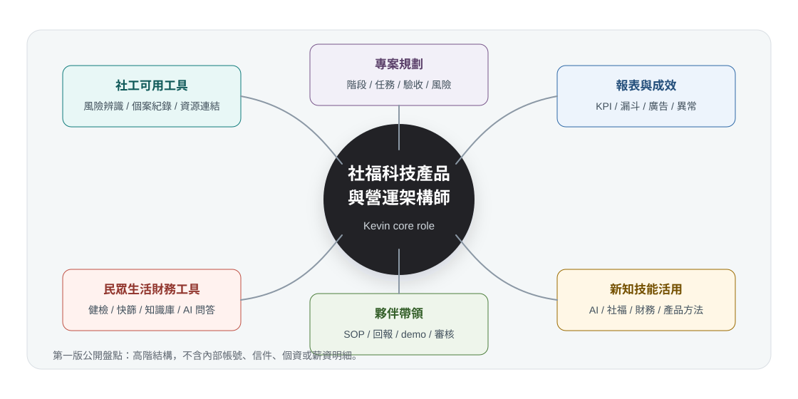

Operating map
目前看到的核心定位
Kevin 的工作不是單一職位，而是一個社福科技營運系統：把社工、民眾、財務、產品、內容、報表與自動化串成可交付的服務。

Executive view
一句話結論
Kevin 現在最需要的不是單純補一位助理，而是把自己身上的多重職能拆成可以被夥伴、Codex 與自動化接住的作業系統。
Capability tree
Kevin 的能力樹
這裡先用公司經營視角，而不是履歷技能清單，整理目前已經浮現的能力主幹。
| 能力主幹 | 目前實際在做 | 未來組織化方式 |
|---|---|---|
| 社福科技產品規劃 | 把社工、家庭經濟、財務工具與服務場景轉成產品方向。 | Kevin 保留方向判斷，PM 協助規格化。 |
| 社工可用工具開發 | 規劃社工專區、財務風險辨識、個案紀錄、資源連結與輔導流程。 | 社福產品助理做需求整理與測試。 |
| 一般民眾生活財務工具 | 規劃財務健檢、風險快篩、知識庫、AI 問答與生活改善工具。 | 內容助理與產品助理共同維護。 |
| 資料與成效判讀 | 讀報表、漏斗、廣告、使用者行為與回饋訊號。 | 資料助理先整理，Kevin 做策略判斷。 |
| 新知與技能蒐集活用 | 把 AI、社福、財務、產品與自動化方法轉成可用流程。 | 建立研究雷達與可實驗清單。 |
| 專案規劃與交付 | 把模糊需求拆成階段、任務、驗收、發布與風險。 | 第二階段導入產品/流程 PM。 |
| 夥伴帶領與訓練 | 把判斷變成 SOP、檢查表、回報節奏與審核 gate。 | 用任務卡與 demo 節奏訓練新人。 |
| Codex 與自動化治理 | 建立 automation、skill、memory、no-op 規則與批准界線。 | 高風險仍需 Kevin 審核。 |
Work portfolio
目前工作版圖
這些不是彼此分散的雜事，而是同一個社福科技營運系統的不同功能。
社工專區、財務健檢、工具流程、使用者回饋、產品 QA。
日報、週報、月報、漏斗、廣告、成效與異常解讀。
通知篩選、回饋保護、草稿、審核、事件與狀態追蹤。
文章、知識庫、教材、財務韌性、社福資源整理。
課務、表單、核銷、提醒、角色工作台與流程盤點。
報告、策略頁、資源站、政策導覽與 production 驗證。
資料擷取、分類、freshness check、靜態資料站。
任務路由、技能、記憶、批准 gate、週期治理。
人力情報站、能力盤點、薪資評估、夥伴梯隊。
Tool product lines
工具開發方向
目前至少有三條工具產品線，應該成為未來人力配置的核心依據。
社工可用工具
- 個案財務風險辨識
- 家庭經濟盤點與紀錄輔助
- 資源連結與轉介整理
- 社工工作台與優先追蹤
- 培訓教材與督導討論輔助
一般民眾生活財務工具
- 財務健檢與風險快篩
- 生活支出與債務整理
- 知識庫與 AI 問答
- 行動建議與資源導航
- 低壓力的自我改善流程
新知與技能活用系統
- AI 工具與產品方法蒐集
- 社福與財務議題案例庫
- 每週可實驗清單
- 從文章/課程轉成 SOP
- 把學習轉成夥伴訓練材料
People architecture
建議的人力架構順序
第一個目標不是找一個全能替身，而是找能接住第一層工作的夥伴。
AI 社福產品營運助理
先接資料整理、產品測試、社工回饋整理、知識庫初稿、報表素材與 Codex 任務紀錄。
產品 / 流程 PM
把需求變成規格、排程、任務卡、驗收清單與跨人協作節奏。
技術 / 自動化夥伴
接資料管線、靜態站、腳本、GitHub/Vercel、儀表板與工具維護。
內容 / 研究編輯
當文章、教材、社福資源與新知蒐集量變大時，建立內容產線。
Delegation matrix
工作應該怎麼拆出去
Kevin 必須親自做
方向、取捨、外部關係、敏感決策、產品最後判斷、是否發布。
可訓練夥伴做
整理、測試、回報、初稿、需求初判、報表素材、活動收尾。
可交給 Codex 做
摘要、格式化、分類、比對、初版表格、提示清單、草稿生成。
應該自動化
固定查詢、週期報表、提醒、資料同步、驗證 gate、no-op 判斷。
Workflow responsibility map / v0.2
目前偵測到的工作線分工
這裡用「主標記」判斷長期主責，不代表其他角色完全不碰；實務上會由 Kevin 定方向，Codex 建結構，夥伴接穩定工作，自動化處理固定節奏。
| 工作線 | 主標記 | 頻率 | 風險 | 可訓練 | 第一位夥伴可接 | 先拆出去的內容 |
|---|---|---|---|---|---|---|
| 好理家在產品營運、社工可用工具 | Kevin 做 | 每週 | 高 | 中 | 20-30% | 訪談整理、產品 QA、社工回饋歸納、需求初判。 |
| 一般民眾生活財務工具 | Kevin 做 | 每週 | 高 | 中 | 20-35% | 案例分類、知識卡初稿、用語測試、使用者問題整理。 |
| 新知、AI 方法、社福與財務技能蒐集 | Codex 做 | 每週 | 中 | 高 | 50-70% | 資料蒐集、摘要、比較表、轉成內部訓練素材。 |
| 專案規劃、任務拆解、驗收設計 | Kevin 做 | 每案 | 高 | 中 | 25-40% | 夥伴維護進度表；Codex 產 WBS、風險與驗收清單。 |
| 夥伴帶領、訓練、品質管理 | Kevin 做 | 每週 | 高 | 中 | 20-35% | SOP、檢核表、訓練材料、交辦紀錄與回饋整理。 |
| 日報、週報、月報與工作紀錄系統 | 自動化 | 每日 / 每週 / 每月 | 中 | 高 | 70-85% | 固定產出、同步、初檢、例外清單；Kevin 看摘要。 |
| Google Ads 到 FamilyFin 時間軸 | 自動化 | 每日 | 中高 | 高 | 80-90% | 讀取前日數據、寫入時間軸、驗證、no-op 判斷。 |
| Gmail 最新 FamilyFin 統計報告檢查 | 自動化 | 每日 / 按需 | 中 | 高 | 75-90% | read-only 查詢、摘要、連結回報、checkpoint 更新。 |
| Gmail 清理、指定回饋保護、safe-trash | Codex 做 | 每週 | 高 | 中 | 35-55% | 候選清單、脈絡閱讀、保護清單；刪除仍需明確授權。 |
| InfoCenter 文章事實查核 | Codex 做 | 每篇 / 批次 | 中高 | 中 | 35-50% | 即時查核、逐篇修正建議、引用整理、風險提示。 |
| InfoCenter / LINE / Google Sheet 流程對照 | Codex 做 | 每週 / 專案 | 中 | 中高 | 45-65% | 狀態比對、缺漏偵測、匯入檔、提醒與追蹤清單。 |
| 課務、表單、核銷、提醒、角色工作台 | 夥伴做 | 每週 / 課前 | 中 | 高 | 60-80% | 資料確認、表單整理、提醒、回報、核銷證據初檢。 |
| FamilyFin knowledge war-room、文章包 gate | Codex 做 | 每週 / 雙週 | 高 | 中 | 30-45% | 候選主題、品質 gate、歷史整理、阻擋原因回報。 |
| 公開成果發布、GitHub / Vercel / noindex | Codex 做 | 每案 | 高 | 中 | 30-45% | 打包、repo、Production deploy、header 與內容驗證。 |
| 公共資料、政策導覽、福利資源站 | 自動化 | 每週 / 每月 | 中高 | 高 | 65-85% | 爬取、freshness check、資料格式化；夥伴做人審。 |
| 人力情報站、實習生 / 人才池、薪資評估 | 夥伴做 | 每週 / 每月 | 高 | 中高 | 55-75% | 資料維護、初篩、訪談紀錄、評估表素材整理。 |
| Agent OS / Codex 技能、記憶、任務路由治理 | Codex 做 | 每週 / 變更時 | 高 | 中 | 20-35% | 技能、記憶、路由、proof；全域規則由 Kevin 批准。 |
| API、知識庫、Agent 190 文件與 prompt hardening | Codex 做 | 專案 / 批次 | 中高 | 中 | 40-60% | 批次上傳、狀態紀錄、prompt 測試；技術夥伴可維護。 |
課務/表單/核銷、人力資料、知識 radar、產品 QA、報表素材與狀態追蹤。
產品方向、服務倫理、敏感決策、夥伴管理、對外發布與薪資任用。
固定查詢、freshness check、週期報表、提醒 gate、no-op 判斷與驗證 proof。
Task package checkpoints / v0.3
任務包與工作檢核點
v0.3 先深拆 6 條最適合第一位夥伴接手、Codex 放大、自動化支援的工作線。每個任務包都要能回報、重跑、判斷 done / no-op / blocked。
查詢、摘要、比對、整理，不改外部狀態。
本機草稿、檢核表、候選清單，可供 Kevin 審。
外部寫入、發送、發布、公開頁更新，需批准。
薪資、任用、個資、金流、法律/財務定論，需 Kevin 決策。
| 共用欄位 | 每個檢核點要回答的問題 |
|---|---|
| 觸發條件 | 日期、事件、表單新增、信件到達、資料更新或週/月結束。 |
| Source of truth | 正式來源是 Sheet、Form、Gmail、repo、JSON、報表頁或人工確認。 |
| 起始 gate | 開始前先檢查權限、來源、上次 checkpoint 與是否已完成。 |
| 執行範圍 | 這次做什麼，也要寫清楚不做什麼。 |
| 主責與狀態 | Kevin、夥伴、Codex、自動化；狀態為 todo / running / blocked / done / no-op。 |
| Done proof | 連結、檔案、數字、檢查結果、log、截圖、commit、訊息 ID 或人工確認紀錄。 |
| Approval gate | 何時要 Kevin 核准，特別是 G2/G3。 |
| Next checkpoint | 下一步、下一次檢查日期、owner、或 no-op 規則。 |
| 優先工作線 | 任務包 | 30/60/90 接手 | Done proof | Gate / 禁止事項 / 升級條件 |
|---|---|---|---|---|
| 課務 / 表單 / 核銷 / 提醒 | 班期與名單盤點 | 30 天：照表檢查 | 課程日期、班別、報名人數、缺漏欄位、來源時間。 | LINE 只能當提醒；正式紀錄以 Form/Sheet 或可稽核資料為準。 |
| 課務 / 表單 / 核銷 / 提醒 | 表單完整性與缺件追蹤 | 60 天：主動追缺件 | 重複、缺欄、格式錯誤、待補件清單與 owner。 | 不自動補完、不代送正式核銷；例外放行升級 Kevin。 |
| 課務 / 表單 / 核銷 / 提醒 | 課前提醒與收尾包 | 90 天：穩定 owner 例行營運 | T-4 週、T-2 週、T-1 週、T-3 到 5 天提醒佇列與收尾清單。 | 外寄、核銷通過、薪資/補助影響進 G3。 |
| 公共資料 / 政策 / 福利資源站 | 來源清單與 allowlist | 30 天：來源與欄位整理 | 來源清單、允許清單、最後檢查日、停用或失效來源。 | 不爬未核准來源；新增來源或公開部署需批准。 |
| 公共資料 / 政策 / 福利資源站 | 擷取、結構化、新鮮度檢查 | 60 天：做人審與 freshness triage | 資料筆數、欄位覆蓋率、官方連結、freshness report、失敗 log。 | 來源衝突、schema 失敗、counts/filter 對不上時 blocked。 |
| 公共資料 / 政策 / 福利資源站 | 民眾可讀卡片審查 | 90 天：維護 reviewed card 佇列 | reviewed card 數量、分類、適用對象、申請條件、官方連結。 | 不把模糊或過期資料寫成確定資格；不收集民眾個資。 |
| 新知 / AI / 社福財務蒐集 | 主題與來源掃描 | 30 天：整理 radar 摘要 | 本期主題、來源池、收錄/排除理由、日期範圍。 | 不把單一來源當政策；不長篇複製付費或版權內容。 |
| 新知 / AI / 社福財務蒐集 | 可信度與台灣適用性檢查 | 60 天：轉訓練卡與 SOP 初稿 | claim table、來源日期、台灣適用程度、需修正或弱化敘述。 | 涉及法律、醫療、財務、HR 或公開說法時升級 Kevin/Codex。 |
| 新知 / AI / 社福財務蒐集 | 素材卡與採用判斷 | 90 天：owner 每週 radar 產線 | 素材卡、使用情境、限制、adopt / validate / pause、下一步。 | 不自動變更 workflow、skill、automation 或 durable memory。 |
| 日 / 週 / 月報 | 來源 readiness 與 fallback | 30 天：蒐集數字與異常點 | 來源矩陣、direct-read 嘗試、gateStatus、fallbackReason。 | 不把缺資料當 0；不抹平 Ads/Gmail/backend 差異。 |
| 日 / 週 / 月報 | 日報合併與週報彙整 | 60 天：產初稿與異常摘要 | 日報檔、週期範圍、引用日報、重要決策、待辦與 index 更新。 | 敏感解讀、外部版本、正式結論仍需 Kevin。 |
| 日 / 週 / 月報 | 月報與 companion sync | 90 天：owner 例行初版 | 自然月範圍、趨勢/KPI、timeline、ledger、publish-ready build。 | 外部 push/deploy/share 進 G2；缺資料與 index 不同步時 blocked。 |
| Gmail 最新報告 read-only | 上次 checkpoint gate | 30 天：read-only 監看摘要 | 上次 message id、timestamp、permalink、查詢起點。 | 只允許 search/read/batch-read；不測 draft/send。 |
| Gmail 最新報告 read-only | 精準週報與較廣相關查詢 | 60 天：區分 weekly / daily | query、結果數、最新 message id/time、無 mailbox 寫入聲明。 | 不 delete/archive/label/move/star/mark read；多封候選不混成一封。 |
| Gmail 最新報告 read-only | 摘要與 checkpoint 更新 | 90 天：owner 固定檢查節奏 | 短摘要、Gmail 原始連結、信件時間、主旨、checkpoint 或 no-op。 | 沒新 weekly 但有 newer daily 時，要兩件事都明講。 |
| 人力情報 / 人才池 / 薪資素材 | 試算表匯入與欄位整理 | 30 天：維護欄位與缺漏 | 月份、來源檔、成功/略過列數、欄位錯誤。 | 不公開候選人個資、薪資、身分證、銀行、完整地址。 |
| 人力情報 / 人才池 / 薪資素材 | 人才池重建與初篩素材 | 60 天：初篩與訪談紀錄摘要 | internal/public 分流、人數、active/paused、covered months。 | 不由 AI 或夥伴做最終聘用、淘汰、薪資判斷。 |
| 人力情報 / 人才池 / 薪資素材 | 薪資評估素材與 radar 週更 | 90 天：準備面談包與 shortlist | 評估指標、來源月份、redaction log、radar-week、no-op 或更新。 | 薪資區間、任用、夥伴管理、對外發布都進 G3。 |
| 人力階梯 | 30 天 | 60 天 | 90 天 | 仍保留給 Kevin / Codex / 自動化 |
|---|---|---|---|---|
| 第一位夥伴 | 資料齊備、缺件、來源日期、QA 截圖、read-only 摘要。 | 主動追缺件、產初稿、初篩摘要、severity 初判。 | owner 例行營運、工作台、checkpoint、阻塞清單。 | 不決定產品方向、外部發布、薪資任用、刪除資料或高風險 close。 |
| Codex | 表格、摘要、比對、草稿、proof 格式化。 | WBS、風險、驗收、事實查核、異常分類。 | 治理規則、複雜 proof、報表/任務包持續改版。 | 不替代 Kevin 的倫理、薪資、任用、公開與敏感決策。 |
| 自動化 | 固定查詢、提醒、freshness check、no-op gate。 | 資料同步、週期報表、初步異常偵測。 | 穩定 proof 與 blocked checkpoint 記錄。 | 不做外部 mutation、公開發布、mailbox mutation 或金流/薪資決策。 |
blocked checkpoint 格式：
last successful checkpoint、session state、project context state、exact blocked step、fallback checks completed、proof artifacts、decision、next retry gate。
HR evaluation model / v0.4
求職者與工讀生的 HR 評估模型
這套模型用來整理能力證據、薪資素材與人力規劃，不做自動錄取、淘汰或定薪。所有薪資、任用、淘汰與敏感人事決策都保留在 G3，由 Kevin 或指定人審者決定。
核心原則：AI 與 Codex 只提供「證據整理、風險提醒、待補資料、級距輔助」，不輸出最終人事命令。
| 維度 | 預設權重 | 看什麼 | 低分限制 |
|---|---|---|---|
| D1 Kevin 工作線理解 | 12 | 能否理解社福科技、產品營運、報表、人力情報站的實際任務。 | 低於 3：先做試作，不直接接跨線任務。 |
| D2 任務包執行可靠度 | 18 | 能否照 checkpoint 做事、回報 done/no-op/blocked、穩定收尾。 | 低於 3：不給 owner 身分。 |
| D3 資料與證據品質 | 14 | 來源日期、欄位完整、截圖/連結/log、缺漏標示。 | 低於 3：不處理高風險資料整理。 |
| D4 溝通與回報 | 12 | 能否短、準、可追蹤地回報，讓 Kevin 可決策。 | 低於 3：只接明確單步任務。 |
| D5 學習速度與可訓練性 | 14 | 30/60/90 天是否能從照表做到主動維護、初判、例外升級。 | 低於 3：延長試作，不升級任務權限。 |
| D6 風險、個資、approval gate | 12 | 是否知道薪資、任用、個資、外部發布都不能自行決定。 | 低於 3：不接觸候選人個資、薪資素材或任用流程。 |
| D7 Codex / 工具協作 | 8 | 能否把任務拆成 Codex 可協助的 prompt、表格、比對、檢核清單。 | 低於 3：先用固定模板，不設計流程。 |
| D8 角色專業深度 | 10 | 依角色看營運、技術自動化、內容研究等硬能力。 | 低於 3：不當專業夥伴，只能作助理或試作。 |
| 評估維度 | 第一位夥伴 | 技術 / 自動化夥伴 | 內容 / 研究夥伴 |
|---|---|---|---|
| D1 工作線理解 | 12 | 6 | 16 |
| D2 執行可靠度 | 20 | 12 | 8 |
| D3 資料證據品質 | 15 | 12 | 16 |
| D4 溝通回報 | 15 | 7 | 17 |
| D5 學習可訓練 | 14 | 8 | 10 |
| D6 風險 gate | 14 | 12 | 12 |
| D7 Codex / 工具 | 5 | 18 | 6 |
| D8 專業深度 | 5 | 25 | 15 |
| 加權分數 | 人力判斷 | 薪資/職等用法 |
|---|---|---|
| 1.0-1.9 | 不錄用或只保留觀察。 | 不進薪資評估。 |
| 2.0-2.6 | 短期試作 / 工讀候選，低風險任務。 | 試作或短期合約。 |
| 2.7-3.2 | 初階助理，可接 G0/G1 任務。 | 落在核准區間低段或試作段。 |
| 3.3-3.8 | 穩定工讀 / 助理 owner，可接明確任務包。 | 落在核准區間中段。 |
| 3.9-4.4 | 專業夥伴，可主責一條工作線。 | 可評估區間中高段，但需證據信心 A/B。 |
| 4.5-5.0 | 稀有核心夥伴候選，仍需試作與 Kevin 面談。 | 只能作高段參考，不自動定薪。 |
證據信心
A：試作或實績證據；B：訪談加作品；C：履歷或自述。C 級證據即使分數高，也只給試作或短期合約建議。
薪資表達
只輸出「低於區間 / 符合區間 / 高於區間 / 需人工判斷」，不輸出單一薪資命令。
風險旗標
風險不混進平均分，要獨立顯示，例如資料不足、個資風險、評分信心低、需人審。
Workforce war-room integration
與人力情報站整合方式
HR 評估不要直接併進公開人力情報站，而是在內部新增 assessment layer。公開站只顯示匿名、彙總、不可回推個人的統計與 redaction proof。
履歷、求職表單、工讀訊息先進 staging，不直接覆蓋人才池。
抽出技能、經驗、可上班時段、角色偏好、缺漏欄位與資料信心。
排除身分證、銀行、完整地址、與工作無關的敏感特徵。
依角色模板產能力、適配、可靠度、可用工時、薪資區間輔助。
錄用、淘汰、薪資、調度都要 reviewer、decision reason、override reason。
公開輸出只保留彙總統計、coveredMonths、historyAmountsExcluded=true。
| Public snapshot | Internal assessment | Restricted |
|---|---|---|
| 人才總數、active/paused 數 | 真實姓名、電話、Email、居住區域、通勤範圍 | 薪資金額、offer、付款細節 |
| 匿名技能分布、角色類別供給量 | 個人技能、履歷摘要、作品、面談紀錄 | 身分證、銀行資料、完整地址 |
| coveredMonths、缺口趨勢 | 工時訊號、任務類型、評估分數、下一步 | 薪資談判紀錄、例外核准 |
| historyAmountsExcluded=true | risk flags、reviewer、override reason | 核薪與財務授權紀錄 |
| 既有資料 | 新模型用途 | 安全規則 |
|---|---|---|
| active / paused | 人才狀態與可用性。 | 可進 public 彙總，不顯示個人。 |
| phone / Email | internal 聯絡欄位。 | 不進 public，不進一般公開 JSON。 |
| residence | 通勤或區域判斷。 | 只保留區域，不使用完整地址。 |
| monthly work signals | 可靠度、熟悉度、可用工時證據。 | 作營運證據，不直接當能力或薪資結論。 |
| coveredMonths | 資料覆蓋與信心分數。 | 可進 public 彙總。 |
| paid / due | 營運狀態。 | 不當作能力評分。 |
| historyAmountsExcluded | public redaction 必備旗標。 | 若缺失，公開 build 應 fail。 |
禁止事項：
不公開個人評分、薪資、身分證、銀行、完整地址、電話、Email、原始履歷或薪資談判紀錄；不使用 AI 分數作自動錄取、淘汰或定薪。
Schema and templates / v0.5
可填寫的 HR 評估模板
v0.5 把 HR 評估模型轉成可被 Sheet、JSON 與人力情報站 internal assessment layer 使用的安全模板。這些檔案只包含欄位與空白結構，不包含任何真實求職者或工讀生資料。
JSON Schema
定義 person、application input、evaluation run、decision record、redaction status。
開啟 schema空白 JSON Record
可作為 internal assessment record 的空白範本，預設 public_allowed=false。
開啟空白 recordSheet 欄位模板
Google Sheets / Excel 可用的 tab 與欄位清單，含分類、必填、公開邊界。
開啟 CSV templateInternal Workbench Spec
描述人力情報站的 staging、evaluation、Kanban、redaction preview 與 restricted review。
開啟工作台規格| 模組 | 目的 | 安全邊界 | 下一步實作 |
|---|---|---|---|
| Staging Queue | 接求職表單、履歷、工讀訊息、既有人才池紀錄。 | 不直接覆蓋正式人才池；先標示來源與同意範圍。 | 建立匯入表單與缺漏欄位檢查。 |
| Evaluation Workbench | 依 D1-D8 與角色權重產出評估素材。 | AI summary 只做輔助摘要，不做最終人事命令。 | 建立 role template 與 weighted_score 計算。 |
| Decision Record | 記錄 reviewer、decision reason、override reason、下一步。 | 錄用、淘汰、薪資、offer 都是 G3。 | 建立人審流程與不可跳過欄位。 |
| Redaction Preview | 預覽哪些欄位會進 public snapshot。 | phone、Email、薪資金額、完整地址、身分證、銀行資料出現即 fail。 | 建立 public build 前敏感欄位掃描。 |
v0.5 實作邊界：
這次建立的是 schema、Sheet-ready 欄位與工作台規格；尚未接入真實人力情報站資料，也未建立任何自動錄取、淘汰、定薪或公開發布流程。
Next version / v0.6
下一版要補的內容
公開安全邊界：
本頁是高階盤點，不包含私人信件、內部 ID、帳號、候選人個資、薪資明細或未公開操作紀錄。noindex 是搜尋控制，不是隱私保護。